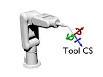
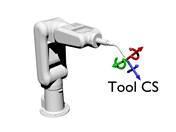
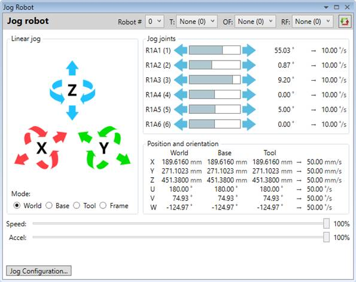
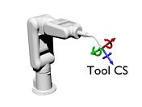
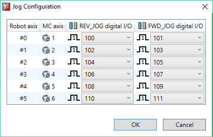
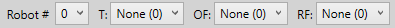
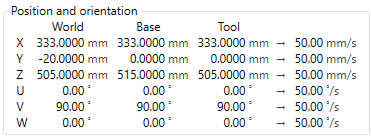

Robot jog tool provides ability for movement operations on a predefined kinematic group.

It is capable to:
- jog joints – in that mode joints of the robot can be moved individually
- do linear jog – in that mode all joints are moved simultaneously in order to produce linear movement with regard to world, base, tool or object frame coordinate system
Jog speed, acceleration and deceleration can be adjusted in the user interface using sliders controls. The speed and acceleration factors are expressed in percentage from the maximum values defined in robot configuration.
In joint control mode the formula for calculating the actual speed, acceleration and deceleration are as follows:
JOGSPEED = AXIS_JOGSPEED * speed_factor / 100
ACCEL = AXIS_ACCEL * accel_decel_factor / 100
DECEL = AXIS_DECEL * accel_decel_factor / 100
In linear mode the similar equations are used but linear set of parameters are used as a base:
JOGSPEED = WORLD_JOGSPEED * speed_factor / 100
ACCEL = WORLD_ACCEL * accel_decel_factor / 100
DECEL = WORLD_DECEL * accel_decel_factor / 100
Current coordinates and effective speeds to be applied during jogging are displayed on per joint basis.
Cartesian 3D directional X, Y, Z and angular U, V, W coordinates against global world, robot base and currently selected tool coordinate system are shown.
Once the robot is configured properly and 6 axes are assigned to the kinematic group it is possible to perform a linear movement in X, Y and Z directions as well as rotational movement along these 3 Cartesian axes. The user interface provides 12 buttons in an intuitive form to accommodate that functionality.
Pressing or starts linear movement in negative or positive X direction respectively.
Pressing or starts rotational movement along X axis in counter-clockwise or clockwise direction respectively.
Pressing or starts linear movement in negative or positive Y direction respectively.
Pressing or starts rotational movement along Y axis in counter-clockwise or clockwise direction respectively.
Pressing or starts linear movement in negative or positive Z direction respectively.
Pressing or starts rotational movement along Z axis in counter-clockwise or clockwise direction respectively.
Linear jogging can be performed in four different modes depending on the reference coordinate system – world, base, tool or frame. In each mode directional and rotational movement is done against XYZ axes of the corresponding coordinate system.

Once the kinematic group is defined it will not be possible to use the normal jog tool to jog individual axes belonging to the kinematic group as an additional configuration will be required to initialize the jog operation. Robot jog tool provides functionality similar to the normal Jog tool but extended to properly initialize jog operation in such case.
Pressing or buttons initiates reverse or forward jog operation respectively.
The progress like indicator between the buttons indicates graphically the current joint position with regard to the limits.
Jog configuration window allows modifying the digital I/O assignments for forward and reverse jogging on per axis basis by modifying FWD_JOG and REV_JOG axis parameters. It is also possible to adjust the active state of the signals by using INVERT_IN command.

Robot jog tool supports configuration with multiple kinematic groups defined. For each kinematic group active tool, object frame and robot frame can be selected. A toolbar in the upper area of the jog tool provides the user with ability to select any of these.

Current Cartesian coordinates of the selected kinematic group are visualized and periodically updated. Three sets of coordinates are displayed relative to:
- global world coordinate system – active tool offset, object and robot frame are taken into account when calculating the coordinates;
- base coordinate system of the robot – only active robot frame is taken into account when calculating the coordinates;
- tool coordinate system – active tool offset and robot frame but not the object frame are taken into account when calculating the coordinates.

The last column displays the effective speeds that will be used when doing linear jog operation.